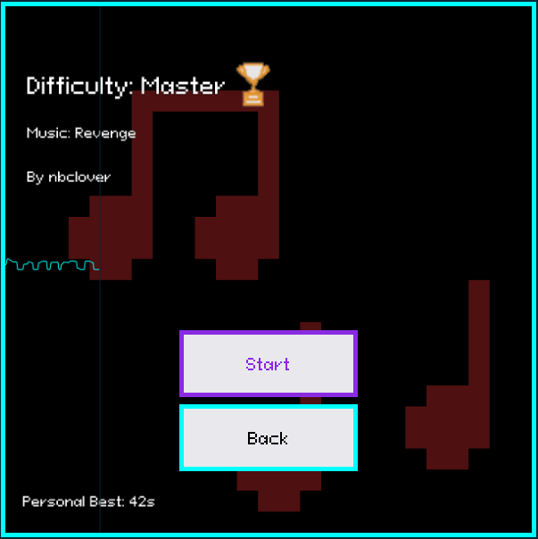

Documented by Francis and Ben
Get Started!
Table of Contents:
- Game Overview
- Player Controls
- Game Penalties
- Trophies
Welcome to the Tutorial Page! Please take a look at our Table of Contents to get started!
Game Overview
Welcome to Rhythm Swipe! Players complete the game by collecting jewels in each level and then progressing to the green square. The game consist of four levels, those being Easy, Normal, Hard, and Master. Each level has its own unique challenge combining level design and music. When selecting the level, there is a preview of the music that the player must follow the beat to. Below is an example of a level the player will see.
Player Controls
In order to move, players must follow the beat of the song within the level using the "WASD" keys. Alternatively, players can use the "IJKL" keys to move.
Game Penalties
The number at the bottom right represents the number of mistakes players can make, it always starts at 3. Reaching 0 results in a game over. The player can move to the beat, when the red or blue cubes at the bottom are inside the number box. The blue cube represents when the cops move positions. Note that you can move when the blue cube is within the number box.
Touching the cop or the cop touching the player will immediately result in a game over, regardless of how many mistakes the player has left.
Trophies
For each level, there is a "Current Record Time" on the bottom left. By default, it will display "???".

Once you complete a level, it will display your current time along with a trophy next to the difficulty name. Below is an example of what that will look like.
